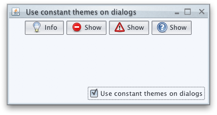
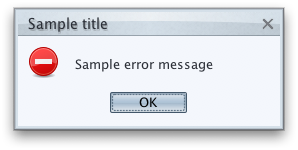
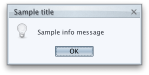
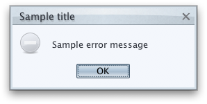

|
Sample code |
import java.awt.BorderLayout;
import java.awt.FlowLayout;
import java.awt.event.ActionEvent;
import java.awt.event.ActionListener;
import javax.swing.*;
import org.pushingpixels.substance.api.SubstanceLookAndFeel;
import org.pushingpixels.substance.api.skin.NebulaSkin;
/**
* Test application that shows the use of the
* {@link SubstanceLookAndFeel#setToUseConstantThemesOnDialogs(boolean)} API.
*
* @author Kirill Grouchnikov
* @see SubstanceLookAndFeel#setToUseConstantThemesOnDialogs(boolean)
*/
public class SetUseConstantThemesOnDialogs extends JFrame {
/**
* Creates the main frame for <code>this</code> sample.
*/
public SetUseConstantThemesOnDialogs() {
super("Use constant themes on dialogs");
this.setLayout(new BorderLayout());
ClassLoader cl = Thread.currentThread().getContextClassLoader();
String packageName = SetUseConstantThemesOnDialogs.class.getPackage()
.getName();
JPanel buttonPanel = new JPanel(new FlowLayout());
JButton bopi = new JButton("Info", new ImageIcon(cl
.getResource(packageName.replace('.', '/')
+ "/dialog-information.png")));
bopi.addActionListener(new ActionListener() {
public void actionPerformed(ActionEvent e) {
JOptionPane.showMessageDialog(
SetUseConstantThemesOnDialogs.this,
"Sample info message", "Sample title",
JOptionPane.INFORMATION_MESSAGE);
}
});
buttonPanel.add(bopi);
JButton bope = new JButton("Show", new ImageIcon(cl
.getResource(packageName.replace('.', '/')
+ "/dialog-error.png")));
bope.addActionListener(new ActionListener() {
public void actionPerformed(ActionEvent e) {
JOptionPane.showMessageDialog(
SetUseConstantThemesOnDialogs.this,
"Sample error message", "Sample title",
JOptionPane.ERROR_MESSAGE);
}
});
buttonPanel.add(bope);
JButton bopw = new JButton("Show", new ImageIcon(cl
.getResource(packageName.replace('.', '/')
+ "/dialog-warning.png")));
bopw.addActionListener(new ActionListener() {
public void actionPerformed(ActionEvent e) {
JOptionPane.showMessageDialog(
SetUseConstantThemesOnDialogs.this,
"Sample warning message", "Sample title",
JOptionPane.WARNING_MESSAGE);
}
});
buttonPanel.add(bopw);
JButton bopq = new JButton("Show", new ImageIcon(cl
.getResource(packageName.replace('.', '/')
+ "/help-browser.png")));
bopq.addActionListener(new ActionListener() {
public void actionPerformed(ActionEvent e) {
JOptionPane.showMessageDialog(
SetUseConstantThemesOnDialogs.this,
"Sample question message", "Sample title",
JOptionPane.QUESTION_MESSAGE);
}
});
buttonPanel.add(bopq);
this.add(buttonPanel, BorderLayout.CENTER);
JPanel controls = new JPanel(new FlowLayout(FlowLayout.RIGHT));
final JCheckBox useConstantThemesOnDialogs = new JCheckBox(
"Use constant themes on dialogs");
useConstantThemesOnDialogs.setSelected(SubstanceLookAndFeel
.isToUseConstantThemesOnDialogs());
useConstantThemesOnDialogs.addActionListener(new ActionListener() {
public void actionPerformed(ActionEvent e) {
SwingUtilities.invokeLater(new Runnable() {
public void run() {
SubstanceLookAndFeel
.setToUseConstantThemesOnDialogs(useConstantThemesOnDialogs
.isSelected());
}
});
}
});
controls.add(useConstantThemesOnDialogs);
this.add(controls, BorderLayout.SOUTH);
this.setSize(400, 200);
this.setLocationRelativeTo(null);
this.setDefaultCloseOperation(JFrame.EXIT_ON_CLOSE);
}
/**
* The main method for <code>this</code> sample. The arguments are ignored.
*
* @param args
* Ignored.
*/
public static void main(String[] args) {
JDialog.setDefaultLookAndFeelDecorated(true);
JFrame.setDefaultLookAndFeelDecorated(true);
SwingUtilities.invokeLater(new Runnable() {
public void run() {
SubstanceLookAndFeel.setSkin(new NebulaSkin());
new SetUseConstantThemesOnDialogs().setVisible(true);
}
});
}
}
The screenshot below shows the initial frame that allows opening option panes
with different predefined messages.

By default, the option panes icons use constant colors. Here is an option pane with
JOptionPane.INFORMATION_MESSAGE message type (note that the icon is not colorized
with the current theme):

Here is an option pane with
JOptionPane.ERROR_MESSAGE message type (note that the icon is not colorized
with the current theme):

After calling this API with false value, the option pane icons are colorized
with the colors of the current theme. Here is the option pane with
JOptionPane.INFORMATION_MESSAGE message type (note the colorized icon):

Here is the option pane with
JOptionPane.ERROR_MESSAGE message type (note the colorized icon):

|